最近のコメント:もちからWeb2 になりました
perlに限界を感じていたのでpythonへの移行を開始しました。
いわゆるシステム更改とかマイグレーションとかっていうヤツです。
でもやれることが広がって、更改ではじめてできるようになることもたくさんあります。
また運用試験で延々安定しませんが…ご容赦を。
端末から各種動画ファイルと音楽(mp3)ファイルの登録・再生ができるカラオケシステムです
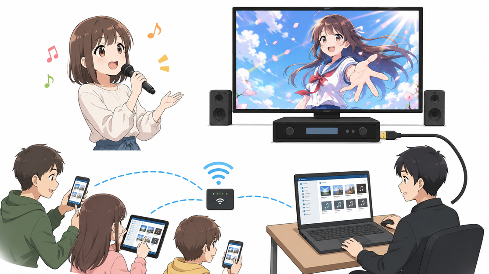
図-01.もちからWeb2 システム運営イメージ
カラオケ店の配信装置にPCを接続し、持ち込んだ動画や音楽ファイルを再生してカラオケを楽しむ「持ち込みカラオケ」を、シームレスかつ円滑に運営するための Web ベースシステムです。
受付用端末は、再生用ノートPCに無線LAN(モバイルホットスポット)で接続できるスマートフォン・PC・タブレット等、ご自分の機器が使用できます。
参加者各自がお使いの機器のブラウザで動画や曲の検索をし登録をすると、順番に再生されます。
特に音楽（mp3）を登録した場合、あわせて好きな背景動画を選択すると、動画と音楽をあわせて再生します。
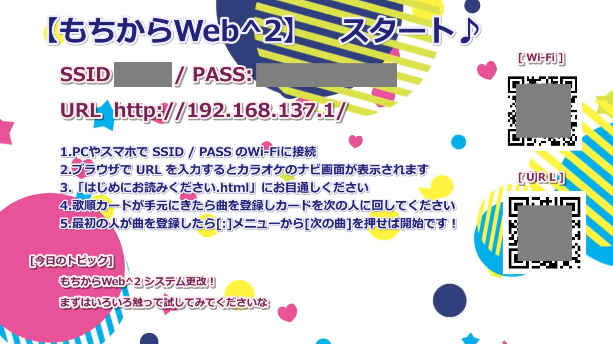
図-02.もちからWeb2 スタート動画
運営PCでは apache2 と MPC-BE が起動されて、これをカラオケ店のディスプレイに表示しています。
運営の開始時に、カラオケのディスプレイに接続先の無線LANの名前、パスワードとURLが表示されます。
手順にしたがって接続、操作してください。
無線LAN接続、URLはQRコードを読み取ることで接続することもできます。
接続の仕方が不明な場合、運営にお尋ねください。
ブラウザに「もちからWeb」が表示されたら、曲を検索、登録します
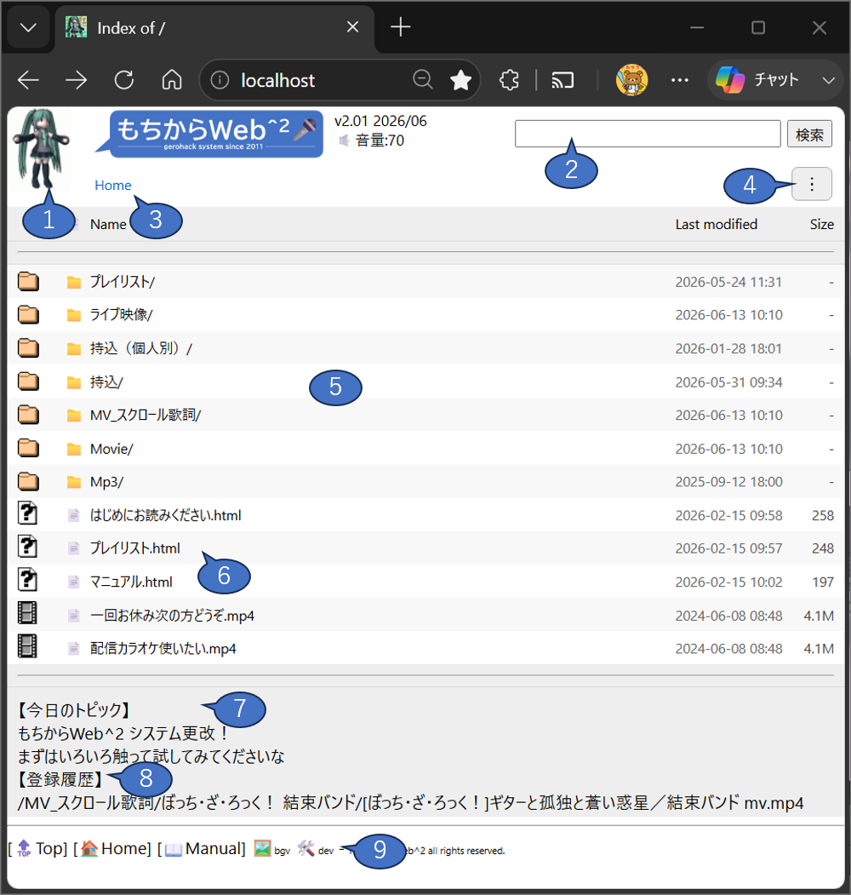
エクスプローラ風の画面で、歌いたい楽曲の動画ファイル(mp4,mpg...etc)や音声ファイル(mp3)を選択すると、楽曲登録画面に遷移します。
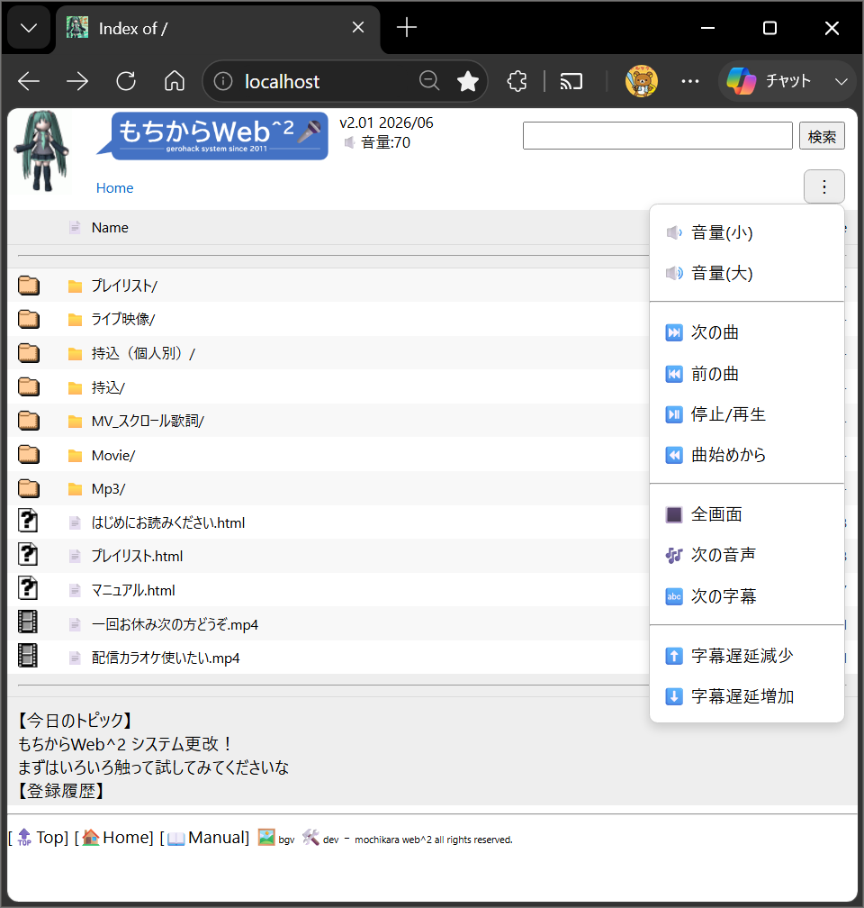
画面右上にある [⋮] メニュー(ケバブメニュー、というらしい…)では、再生中の楽曲に対しての各種操作ができます。他の人の歌唱中には操作しないようにしてください。
動画を選択すると楽曲登録確認画面が表示されます
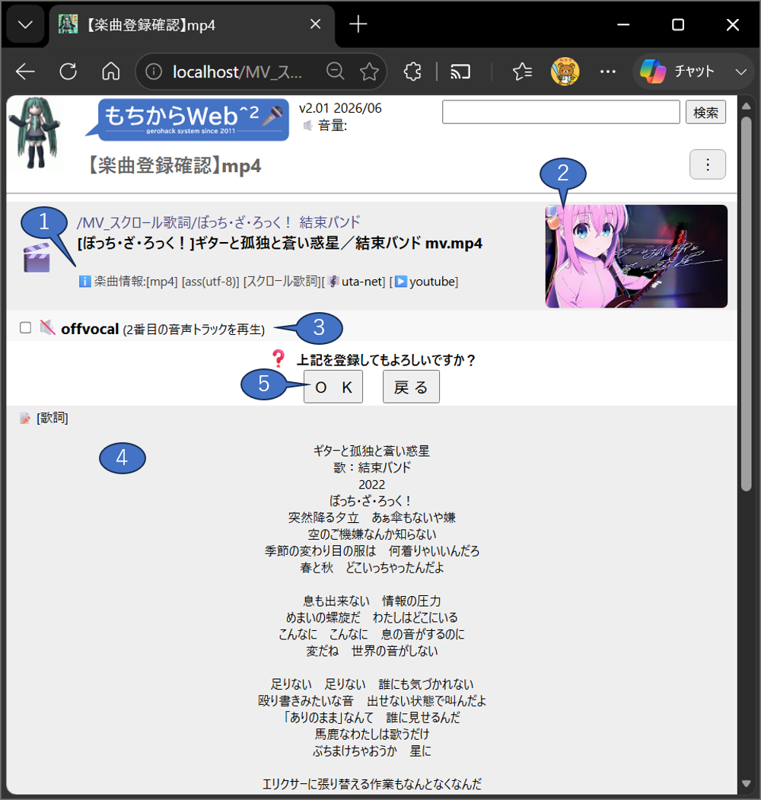
動画に関する各種情報やサムネイル、歌詞がテキスト情報の場合はその内容を表示します。
問題なければ [ＯＫ] のボタンを押してください。
[戻る] のボタンを押した場合、前のページに戻ります。
🔇offvocal チェックボックス
複数の音声トラックがある場合、このチェックボックスをonにすることで２番目のトラックを登録できます。
（当システムでは２番目の音声トラックがオフボーカルであることを想定しています）
もしも複数の音声トラックがない場合、この項は表示されません。
また、このチェックボックスをつけてなくても、再生中に [⋮] メニュー の 🎶 次の音声 から切り替えることができます。
[歌詞]
字幕ファイル(ass)、タイムタグテキストファイル(txt)がある場合、この歌詞テキストを表示します。
ルビや曲情報も書き起こしてしまいますので、あくまでも目安としてください。
また、テキスト情報のない楽曲（字幕埋め込み（ハードサブ）の動画）や、ssaファイルは表示できませんのでご承知おきください。
ＯＫ / 戻る
ＯＫを押すと、各種変換などをを実施し、楽曲を登録します。
インターミッション
楽曲が再生される前に、30秒のインターミッションが挿入されます。
１曲毎に挿入されますので、このタイミングに雑談等をお願いします。
次の曲に移りたい場合、[⋮] メニューから ⏭️ 次の曲 を選択してください。
動画の再生
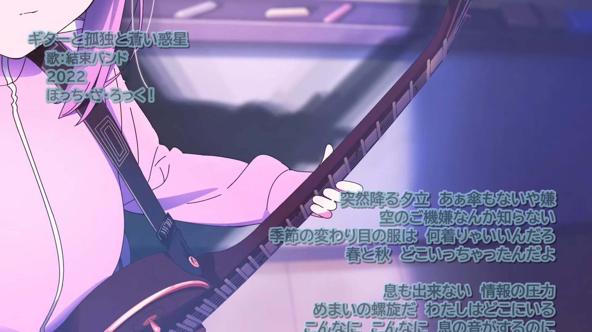
図-06.スクロール動画 表示画面(例)
順番に楽曲の動画と歌詞が表示されます。(上記はスクロール歌詞の表示例です)
登録順序の変更や、誤登録の削除などは、運営者にお声がけください。
当然ですが、歌詞情報がなく、埋め込み歌詞(ハードサブ)でもない動画を再生しても字幕は表示されません。
発見の際には運営に一声おかけください。
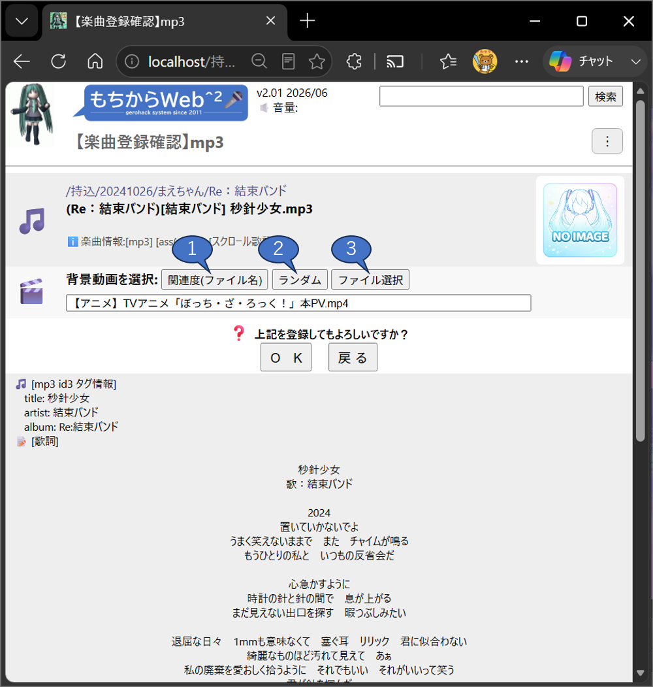
再生するのが音声ファイル(mp3)の場合、合わせて表示する映像（このシステムでは背景動画と呼称しています）を選択することができます。
音声ファイルに合いそうな映像を適当に選んでください。
なお、背景動画はフッタメニューの 🖼️bgv から確認することができます。
楽曲情報などは動画と同様に表示がされますが、以下は表示されませんのでご承知おきください。
音声(mp3)の場合も、動画と同様にインターミッションが挿入されます。
音声(mp3)の再生
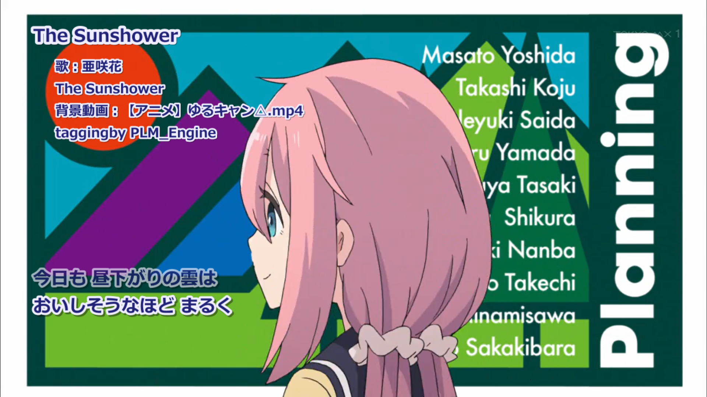
図-08.タイムタグテキスト＋背景動画 表示画面(例)
背景動画と合わせて音声(mp3)を再生します。
上記は、タイムタグテキスト形式(txt)とmp3の組み合わせのものです。
以前、Winampなどで運営されていた時の形式も、そのまま再生することができます。
また、assのスクロール歌詞にも対応しています。
当然ですが、歌詞情報のないmp3を再生しても字幕は表示されません。
発見の際には運営に一声おかけください。
以降は、このもちからWeb2システムの特徴となるところを記載しています。
(一部は mixi発祥のコミュニティ【唄うことに幸せを感じる人】（略称うたさち）のコミュニティ専用の機能になります)
Winampでもちこみカラオケをしていた時代の遺産(レガシー)をそのまま引き継いでおり、リアルタイムでタイムタグテキスト(txt)ファイルを字幕ファイル(ass)に変換、背景動画と重ね合わせて表示することができます。
mp3のID3タグから取得したタイトルやアーティストの情報、またはタイムタグテキスト形式の @タグ情報をもとに、歌いだしの右上部に楽曲の情報を表示します。
また、Winamp時間 にも対応しており、@TimeRatio タグを解釈します。
従来はリモートバッチ処理方式だったのが、もちからWeb2でリアルタイム処理になりました。🆕
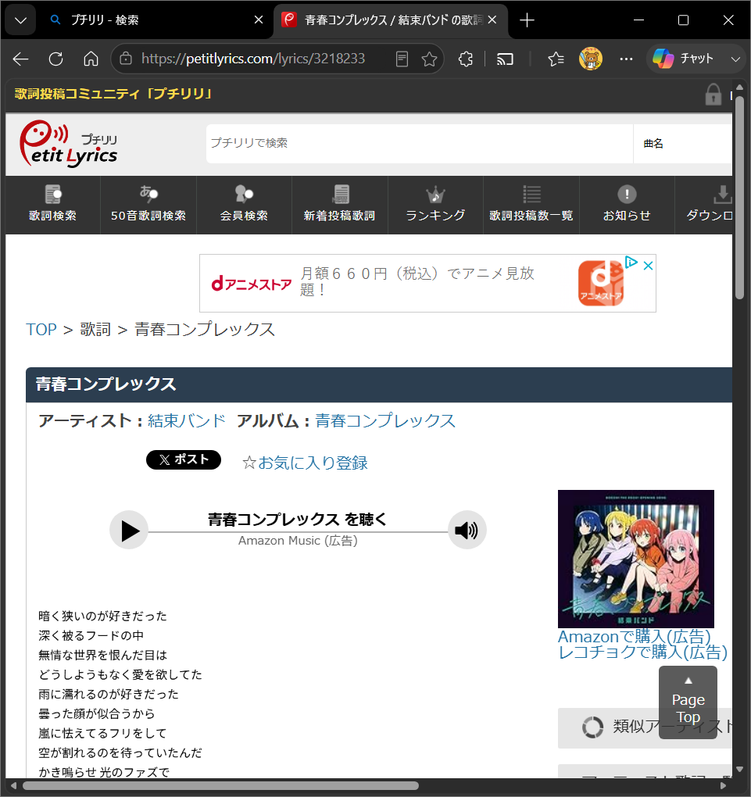
プチリリ は、株式会社シンクパワーが運営する 歌詞の検索投稿コミュニティサイトです。
もちからWeb2では、プチリリのサイトで取り扱うタイムタグを利用することができます。
/Mp3/ フォルダ配下の多くは、この形式で作成されたタイムタグ付 mp3 ファイルを格納しています。
このフォルダ配下の曲は、すべて行タグ（カラオケのような文字毎のワイプがない形式）になります。
以前はプチリリのPC用ツールを用いて表示する機能もありましたが、該当ツールの廃止にあわせて機能の廃止がされています。
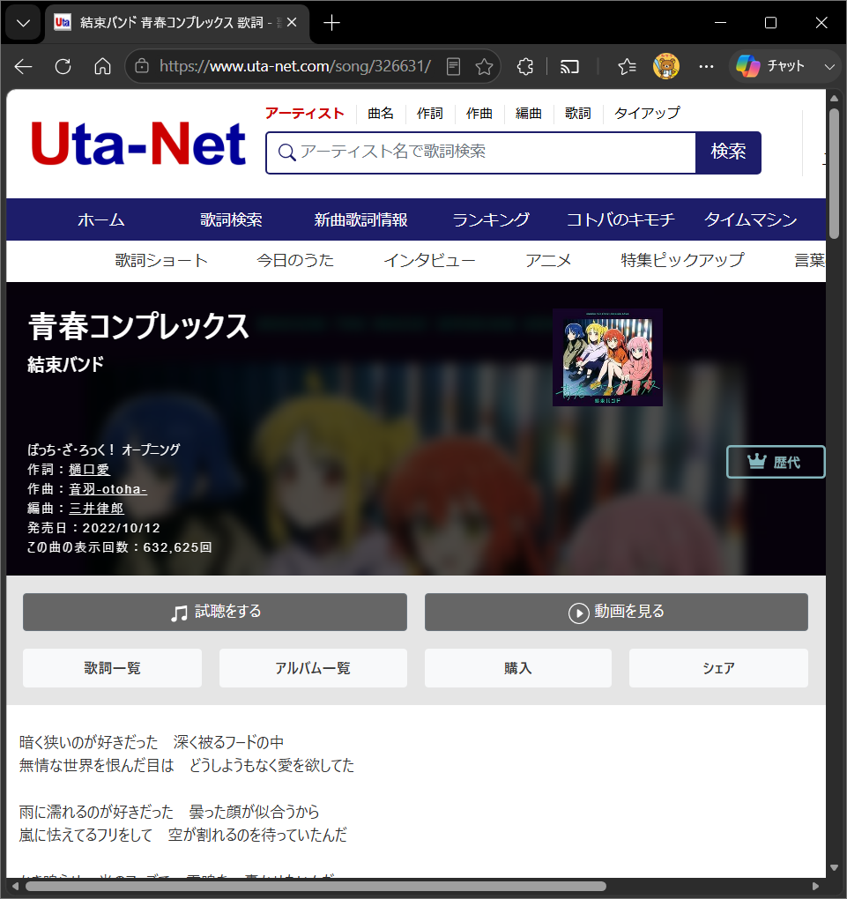
uta-net(歌ネット)は、株式会社PAGE ONEが運営する 2001年開設、国内最大級の歌詞検索サービスです。
もちからWeb2では、uta-net の歌詞情報をもとに、歌詞が下から上にスクロールしていくタイプの字幕ファイル(ass)に対応しています。このスクロール歌詞のassには、タイトルや作詞作曲、リリース年などの曲情報が格納されていますので、この情報をもとに後述のプレイリストが作成されます。
また、プレイリスト機能に連携して新しい楽曲が追加されていきますので、最新のアニメタイアップ曲などをすぐに歌うことができます。
スクロール歌詞は発声タイミングが調整されていないことがありますので、歌詞が画面上部または画面下部に見切れてしまう場合は ⬆️ 字幕遅延減少 / ⬇️ 字幕遅延増加 を使って調整してください。
スクロール歌詞用動画には、以下のような種類があります。厳密なものではありませんが、楽曲選択の際の目安としてください。
| 分類 | 説明 |
|---|---|
| mv | MusicVideoなど、一般的なスクロール歌詞動画の分類。動画を編集せずそのまま使用しています。 アーティストが提供しているMusicVideoである場合が多いです。 |
| youtube | youtube上で取得可能な、音声と映像を合成したスクロール歌詞動画の分類。例えばフルのオーディオに、アニメのノンクレジットオープニング動画(ショート)の映像をループ編集したもの、などが多いです |
| THE FIRST TAKE | 2019年11月に開設されたYouTubeチャンネルで、一発撮りのパフォーマンスを高画質・高音質で収録することをコンセプトとしています。この動画にあわせて歌うことができます。 |
| LyricVideo | 歌詞が映像に埋め込まれたいわゆるリリックビデオ。スクロール歌詞で歌ってください。 |
| Live | ライブ映像。歌詞タイミングが合わないことが多いので注意のほどを。 |
| LiveBGV | ライブ映像ですが、フル尺がない場合、これを背景動画のようにしてループ編集したものが多いです。映像と発声タイミングが合っていませんが、気にしないでください。 |
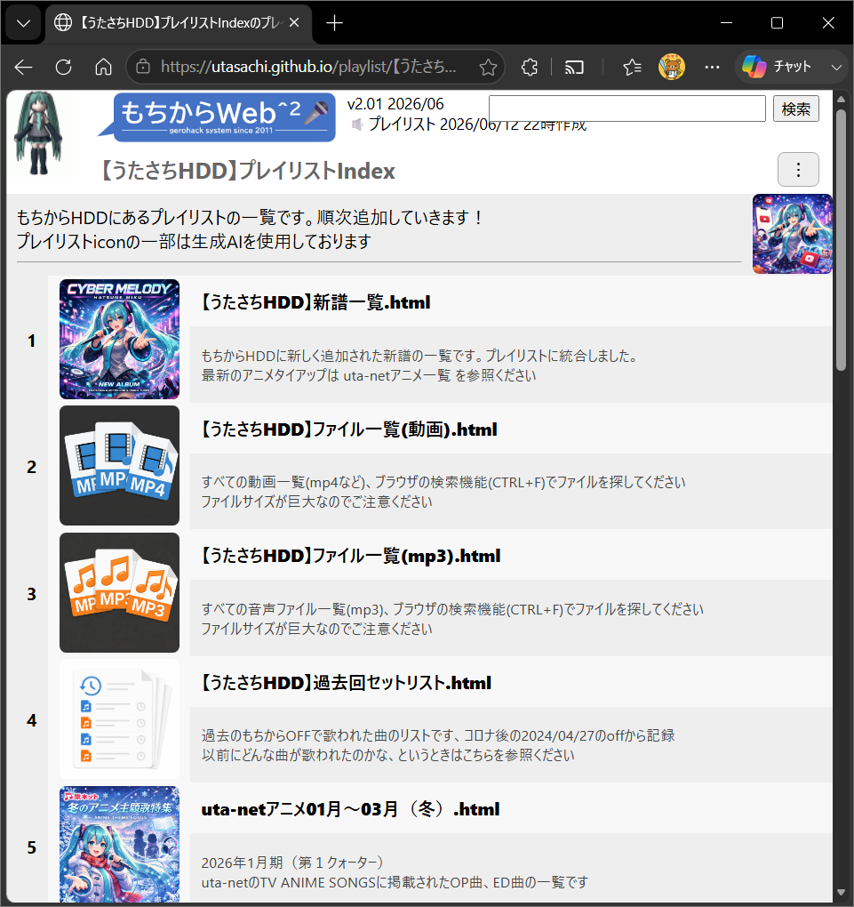
youtubeで公開されている プレイリストの曲一覧をもとに、楽曲のグループをサムネイル付きで一覧化したものです。
履歴などの機能もプレイリストに統合しました
プレイリストについては一覧ページに説明がありますのでそちらを参照ください。
このプレイリストを作成する機能自体ももちからWeb2にございます。
これは開発者用の機能ですが、特定の楽曲やプレイリストが欲しい、といった要望がありましたら当機能で準備することができますので、遠慮なく開発者までお伝えください。
また、プレイリスト作成時、または楽曲の情報表示時にサムネイルを自動作成する機能が追加されました。🆕
スクロール歌詞でサムネイル情報があるときにはそのURLを使用します。
ない場合には、ffmpegで動画の開始30秒後の画像を使用します。これは動画(mp4)のみの機能です。
オープンソースの音源分離ツール Demucs（デモックス） を用いて、ボーカルとその他の音源を分離し、mp4 の音声多重化で2番目のトラックにオフボーカル音声を同梱しました。
Demucs は Meta 社が AI 技術を利用して作った非常に高性能の音源分離ツールであり、GPU を用いて解析を行います。
リアルタイムでの処理は難しいため、
/MV_スクロール歌詞//持込/配下のすべての mp4 を対象として一括バッチ処理しています。
（メインPCの GeForce RTX 3060 が Diablo Immotal 以外で役に立つとは…）
持ち込んだ当日にオフボーカルが利用できるわけではありません。事前に開発者にお渡しするか、次回のカラオケOFFでご利用いただくようお願いします。
なお、ファイル名と拡張子の間に余分なスペースがある場合、Demucsがsystem errorを出力するようなので、持込の際には気にしていただけると幸いです。
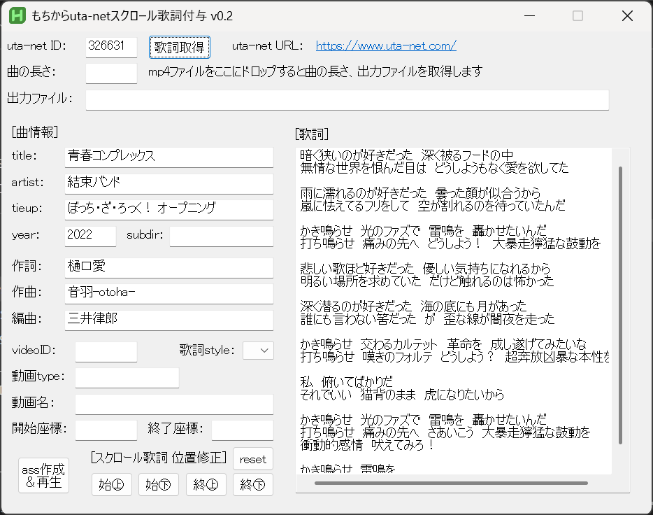
スクロール歌詞を簡単に作成するためのPC用ツールです。autohotkey で作成されています。
動画とuta-netのIDを用意するだけで簡単に作成できます。
詳細については別リポジトリになっていますので、以下を参照してください。
https://github.com/utasachi/MochiutaSC#readme
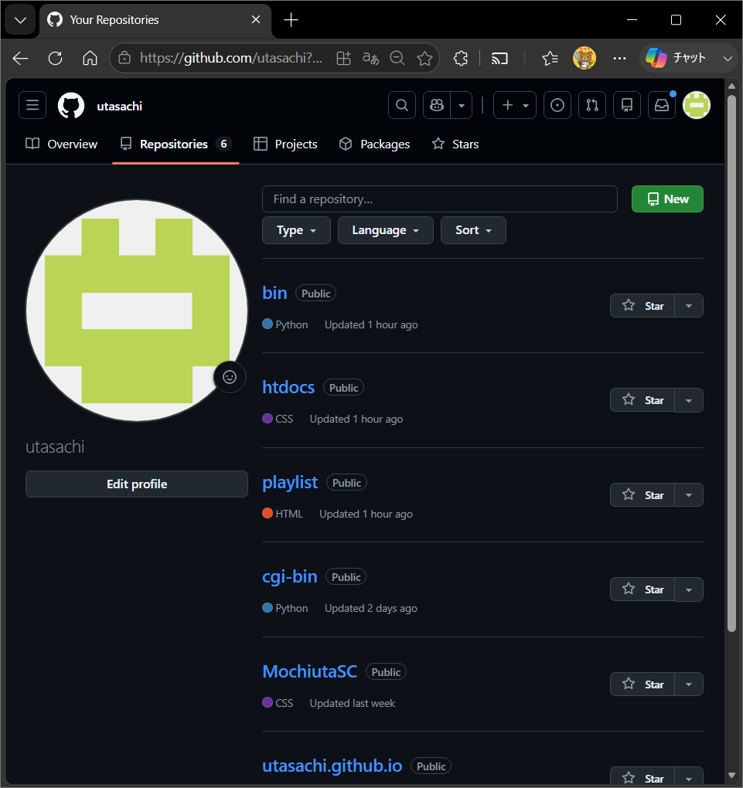
もちからWeb2関係の資材をすべてGithubで管理するようにしました。
プレイリストも Github Pagesで公開していますので、どんな曲が格納されているかを事前に確認できます。
また、うたさちHDDのプレイリストhtmlは、ローカルでの実行に対応しています。🆕
MPC-BEを起動した後、プレイリストのhtmlをローカルで開いてリンクをクリックするとシステムをインストールしなくても再生されます。
簡易的なもちからWebシステムとしてどうぞご利用ください。
| リポジトリ | URL |
|---|---|
| GitHub utasachi 全体 | https://github.com/utasachi |
| utasachi - bin (更新履歴) | https://github.com/utasachi/bin#readme |
| utasachi - htdocs (マニュアル) | https://github.com/utasachi/htdocs#readme |
| プレイリストindex | https://utasachi.github.io/ |
以下は諸事情（誰も使わない、安定しない、サービス終了）などの理由で廃止されました。ご承知おきください……
楽曲の持込は大歓迎です。USBメモリやHDDで持込ください。
ただし、カラオケOFFの会場でリアルタイムに歌詞付けはできませんので、事前にお渡しいただくようお願いします。
（もしくは、次回開催までに開発者がタグ付けしたものを用意しておきます）
| 拡張子 | 利用可能な機能 |
|---|---|
| mp4 | 動画に対するすべての機能が使えます。 ・字幕ファイル(ass) ・スクロール歌詞(ass) ・プレイリストのサムネイル ・オフボーカル(指定フォルダ配下のみ) ・MochiutaSC |
| mpg,mpeg,wmv,avi,mkv,flv | 以下に対応しております。 ・字幕ファイル(ass) mkvのass同梱も歌詞表示としては機能しますが、タグ情報や歌詞の表示はされません。 |
| 上記以外の動画 | 対応しておりません。 |
60fpsや4K,8Kの動画など、システムに負荷がかかるものは避けてください。
x265フォーマットも未検証であり、PC性能に強く依存しますので避けてください。
字幕ファイルを利用する場合、動画ファイルと同名の字幕ファイルを同一のフォルダに配置してください。
もちろん、動画に直接歌詞を埋め込んだり（ハードサブ）、mkv形式で同梱しても結構です。
また、動画はタイムタグテキスト(txt)には対応しておりませんので、事前にassに変換してお持ちください。
| 拡張子 | 利用可能な機能 |
|---|---|
| mp3 | 以下に対応しております。 ・リアルタイムタイムタグテキスト変換(txt) ・背景動画 ・プチリリ連携 ・スクロール歌詞(ass) |
| 上記以外の音声 | 対応しておりません。 wavやaacなど、その他のフォーマットについては事前にmp3に変換してお持ちください。 |
mp3だけ持ち込んでも歌詞が自動付与されるわけではありません
開発者と連携いただければ、スクロール歌詞の付与や、動画の付与などもできる可能性があります。お問い合わせください。
| 拡張子 | 利用可能な機能 |
|---|---|
| ass | 通常のassファイルに加えて、スクロール歌詞やuta-netのタグ情報が利用できます。 |
| ssa | 利用できますが、スクロール歌詞やuta-netのタグ情報は利用できません。 |
| タイムタグテキストファイル(txt) | リアルタイムタイムタグテキスト変換 ＋ 背景動画 が利用できます。 |
| 上記以外の字幕 | 対応しておりません。 字幕ファイル(srt)や、タイムタグテキストファイル(lrc、kra)には対応しておりません。事前にassかtxtファイルにしてお持ちください。 |
フォーマットはassですが、このシステムの独自機能で、コメント部分に曲情報(タグ)が記載されており、これらをもとにプレイリストやサムネイルを作成しています。
これらはもちからWeb2のプレイリスト作成機能で自動生成されますが、テキスト編集が可能です。
また、端末用のツール MochiutaSC でも編集が可能です。
各タグの説明は MochiutaSC Readmeを参照してください。
;[Song Info]
;title=月並みに輝け
;artist=結束バンド
;tieup=劇場総集編ぼっち・ざ・ろっく！ Re： OP
;year=2024
;utaid=356580
;vidid=WGAEIKRdSsE
;mtype=THE FIRST TAKE(on)
;ystart=720
;yend=200
タイムタグ付テキスト形式の歌詞ファイルは、一般的にはWinampという音楽ファイル再生ソフトのプラグインで利用されています。このシステムでは、タイムタグ付きテキストをass形式の字幕ファイルに変換することで、MPC-BEでの利用を可能としております。以下にご留意ください。
・タイムタグ付テキストファイルとmp3ファイルを同一のディレクトリに配置してください。
・拡張子kra,lrcのタイムタグ付ファイルには対応しておりません。
・秒単位のタイムタグには対応しておりません。拡張タイムタグでの作成をお願いします。
・文字タグ（カラオケタグ付き歌詞）、行タグ（行頭タイムタグ付き歌詞）の両者に対応しております。
・@TimeRatio を必ず記入してください。記入がない場合、Winamp時間が採用されます。
・@SilencemSecタグには対応しておりません。一般的にはタイムタグ付きテキストファイルのエディタ側での対応が推奨されています。
・ID3タグを読み取っているため、音楽ファイルはwav、aacなどのフォーマットには対応しておりません。Winampのmp3再生機能には以前、タイムスケールが実時間と異なるというバグがありました。
このバグを前提としたタイムタグはWinamp時間と呼ばれております。
なお、タイムタグ付きテキストファイルに、@TimeRetioタグでタイムスケールが記載されている場合、それを使用します。
・Winamp時間：@TimeRetio=0.9953125
・標準時間：@TimeRetio=1
背景動画は、ドキュメントルートとは別の領域(D:\BGV 等)に保存されています。
運営さんに渡す際に、背景動画がある旨を伝えてください。
背景動画として動作するためには、以下の条件に沿った動画を作成ください。
(下記条件以外でも動作するかもしれませんが、保障はできません)
・ファイルフォーマットはmp4であること
・rawの1番目のストリームがh264の動画ストリームであること
・音声ファイルや字幕ファイルのない、無音の動画ファイルであること
・30もしくは29.97fpsの動画ファイルであること
・1024 x 576 (16:9)の解像度で、アスペクト比が1:1であること
・８～１０分以上の長さがあること
・キーワード抽出可能な名前の付与
クローズドネットワーク上での利用を想定してるため、インジェクションなどの対策は十分ではありません。
くれぐれももちからWeb2(あるいはげろHack)をHackしないようお願いいたします。
著作権物の取り扱いについては、十分な留意をお願いいたします。
以上